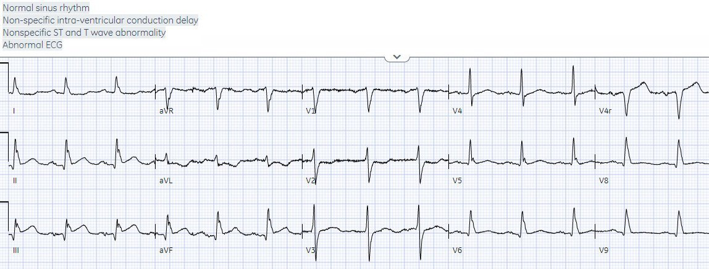
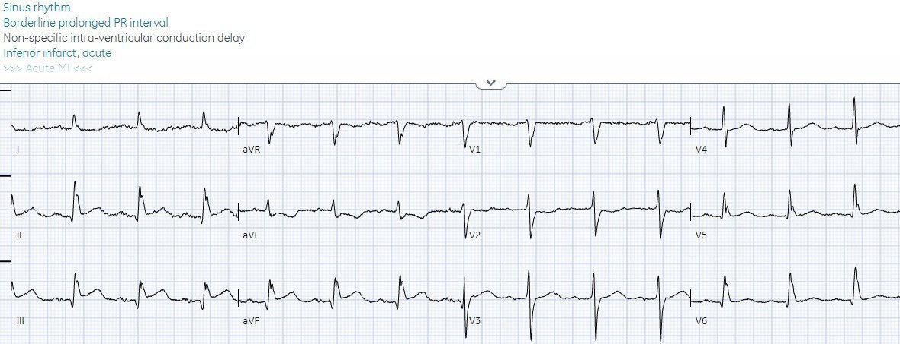
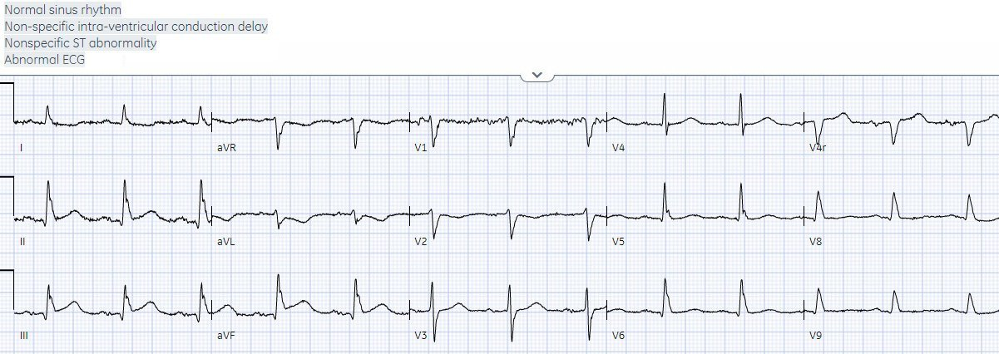
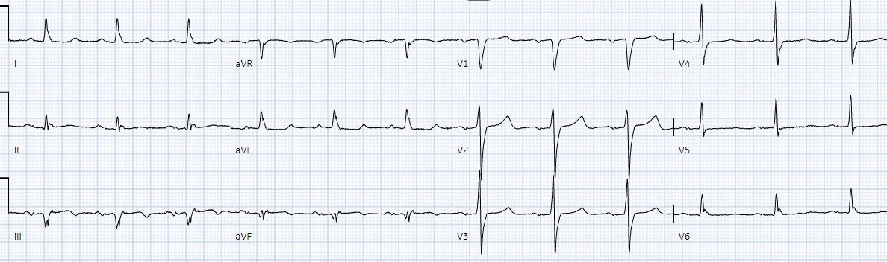
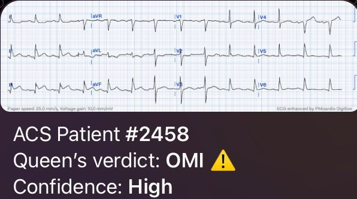
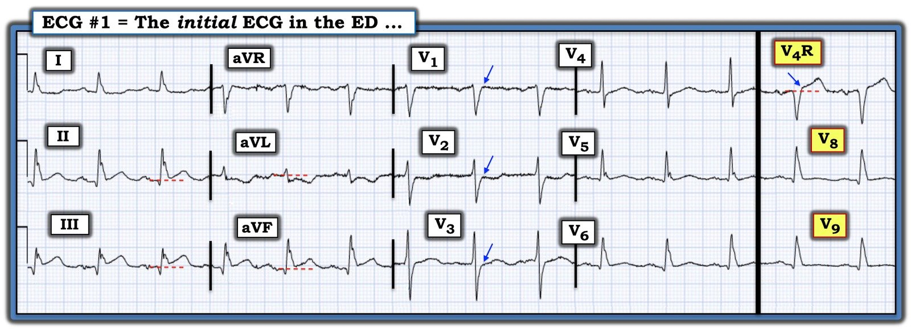

19/08/2023 — Bệnh nhân lọc máu 75 tuổi buồn nôn, nôn và choáng váng
Bản dịch tiếng Việt của bài "75 year old dialysis patient with nausea, vomiting and lightheadedness" – Dr. Smith’s ECG Blog. Giữ nguyên toàn bộ 7 hình ảnh của bản gốc.
Tác giả: Jesse McLaren
Một bệnh nhân 75 tuổi bị đái tháo đường và bệnh thận giai đoạn
cuối được chuyển tới khoa cấp cứu (ED) sau lọc máu vì ba ngày buồn nôn, nôn,
phân lỏng, choáng váng và mệt mỏi. Nhịp thở 18, độ bão hòa oxy 99%, tần số tim 90, huyết áp 90/60, không sốt. Dưới đây là điện tâm đồ 15 chuyển đạo. Bạn nghĩ gì?


Có nhịp xoang bình thường, dẫn truyền bình thường, trục bình thường,
tăng tiến sóng R bình thường và điện thế bình thường. Có ST chênh lên kín đáo ở thành dưới
kèm đoạn ST thẳng đuỗn, ST chênh xuống soi gương và sóng
T đảo ngược ở aVL, và ST chênh xuống ở V2. Hình ảnh này có giá trị chẩn đoán
OMI dưới-sau, nhưng âm tính giả theo tiêu chuẩn STEMI và với
các chuyển đạo phía sau âm tính giả (dù chúng có cho thấy ST chênh lên nhẹ ở V4R).
Vì bệnh nhân không đau ngực hay khó
thở, ban đầu bệnh nhân được chẩn đoán là viêm dạ dày-ruột. Kali bình thường. Điện tâm đồ trên
chỉ được ghi một giờ sau khi bệnh nhân đến viện, lúc troponin I độ nhạy cao đầu tiên
trả kết quả 300 ng/L (bình thường <26 ở nam và <16 ở nữ). Nhưng vì
bệnh nhân không đau ngực hay khó thở, nên không được coi là
do hội chứng vành cấp (ACS).
Điều này không hiếm gặp. Trong một cơ sở dữ liệu lớn về bệnh nhân
nhồi máu cơ tim, những người đang lọc máu có tần suất bệnh đồng mắc cao hơn nhưng chỉ 44%
biểu hiện đau ngực. Họ ít có khả năng có STEMI trên điện tâm đồ hơn, và nhiều
khả năng bị chẩn đoán ban đầu là không phải ACS hơn. Họ có tỷ lệ
ngừng tim cao gấp đôi và tử vong trong viện cao gấp đôi[1]
Trong một nghiên cứu khác ở bệnh nhân được chẩn đoán
STEMI, những người đang lọc máu bị chậm tái tưới máu và tử vong
cao gấp đôi.[2]
Hai giờ sau khi đến viện, một điện tâm đồ khác được ghi:


Giờ đã là OMI STEMI dương tính (STEMI(+)OMI), nhưng bệnh nhân vẫn không đau ngực hay
khó thở, nên bác sĩ cấp cứu đã yêu cầu hội chẩn tim mạch khẩn (STAT).
Bác sĩ tim mạch không nghĩ đây là “STEMI”, nhưng cho làm lại troponin.
Bốn giờ sau khi đến viện, troponin lần hai tăng lên 700,
và thêm một điện tâm đồ 12 và 15 chuyển đạo nữa được ghi:


Vẫn là OMI nhưng không phải STEMI ở các chuyển đạo phía trước hay phía sau.
Bệnh nhân này lẽ ra rất dễ bị nhập viện với chẩn đoán
“non-STEMI” và chậm trễ chụp mạch vành thêm nữa. May mắn thay, phòng thông tim đã được kích hoạt:
tắc 99% RCA đoạn gần với dòng chảy TIMI 2. Troponin đỉnh là 4.000 và siêu âm tim
cho thấy giảm động thành đáy/thành dưới.
Điện tâm đồ lúc ra viện cho thấy sóng Q thành dưới và sóng T tái tưới máu
dưới/sau:


Đọc điện tâm đồ vàáp dụng lâm sàng
Bệnh cảnh lâm sàng thường làm mờ đi việc đọc
điện tâm đồ. Như mọi xét nghiệm khác, điện tâm đồ là một công cụ để
ra quyết định lâm sàng và cần đối chiếu với lâm sàng. Nhưng bước đầu tiên là đọc
điện tâm đồ cho đúng, một cách độc lập. Bạn không cần đánh giá lâm sàng mới biết
được troponin, vì nó có một giá trị cụ thể không phụ thuộc vào triệu chứng
của bệnh nhân. Phòng xét nghiệm đọc troponin một cách độc lập, rồi bạn mới đối chiếu
kết quả với lâm sàng. Bệnh nhân không đau ngực cũng không quan trọng,
vì troponin đầu tiên của họ là 300; Tương tự, bệnh nhân
không đau ngực cũng không quan trọng, vì điện tâm đồ của họ cho thấy OMI. Nhưng việc đọc
điện tâm đồ thường bị lẫn lộn với đánh giá lâm sàng, nên nếu bệnh nhân
không đến viện vì đau ngực thì các thay đổi thiếu máu cục bộ sẽ không được nhận ra hoặc bị quy cho một nguyên nhân khác ngoài thiếu máu cục bộ.
Thay vào đó, điện tâm đồ cần được đọc một cách độc lập rồi mới
áp dụng vào bệnh nhân. Đây chính là cách có thể dạy OMI cho AI, công cụ có thể giúp
nhận diện những bệnh nhân có nguy cơ bị bỏ sót tắc mạch. Tôi đã gửi điện tâm đồ đầu tiên vào
ứng dụng Queen of Hearts:


Với
độ tin cậy cao này khi đọc điện tâm đồ một cách
độc lập, bác sĩ lâm sàng sau đó có thể áp dụng vào bệnh cảnh lâm sàng: một
bệnh nhân lọc máu có triệu chứng tiêu hóa và choáng váng (có thể là các triệu chứng tương đương
đau thắt ngực), không có bất kỳ bằng chứng lâm sàng nào cho thấy đây là OMI típ 2,
và viêm cơ tim là một chẩn đoán loại trừ. Điều này lẽ ra đã có thể
đẩy nhanh
việc kích hoạt phòng thông tim và cứu được cơ tim.
Điều cần nhớ
1.
Bệnh nhân lọc máu có tỷ lệ cao bị ACS
mà không đau ngực, và tỷ lệ cao bị chậm chẩn đoán và chậm tái tưới máu
2.
ST chênh xuống nguyên phát ở aVL soi gương với
ST chênh lên kín đáo ở thành dưới có thể giúp nhận diện OMI STEMI âm tính (STEMI(-)OMI) thành dưới
3.
ST chênh xuống do thiếu máu cục bộ tối đa ở V1-4 có độ
đặc hiệu cao cho OMI thành sau, và các chuyển đạo phía sau có thể âm tính giả
4.
Việc đọc điện tâm đồ cần được thực hiện một cách độc lập rồi mới áp dụng vào bệnh nhân, và theo cách này AI có thể giúp nhận diện những bệnh nhân có nguy cơ bị bỏ sót tắc mạch
Tài liệu tham khảo
1.
Herzog và cs. Clinical characteristics of
dialysis patients with acute myocardial infarction in the United States. A
collaborative project of the United States Renal Data System and the National
Registry of Myocardial Infarction. Tạp chí Circulation, năm 2007
2.
Khan và cs. Contemporary trends and outcomes in
patients with ST-segment elevation myocardial infarction and end-stage renal
disease on dialysis: insights from the National Inpatient Sample. Tạp chí Cardiovasc
Resvasc Med, năm 2020

===================================
BÌNH LUẬN CỦA TÔI, bởi KEN GRAUER, MD (19/8/2023):
===================================
Ca hôm nay có điểm tương đồng với những ca khác mà chúng tôi thường trình bày trên Dr. Smith’s ECG Blog — cụ thể là mặc dù có dấu hiệu rõ ràng trên điện tâm đồ ban đầu gợi ý tắc mạch vành cấp — bản ghi STEMI âm tính nhưng OMI dương tính này không chỉ bị xem nhẹ sau điện tâm đồ ban đầu, mà vẫn không được xử trí ngay cả sau khi xét nghiệm troponin ban đầu trả về tăng, chủ yếu vì bệnh nhân không đau ngực (Xem ca ngày 6 tháng Mười Hai năm 2022 này, cũng của Dr. McLaren — cũng như những ca khác trên Dr. Smith’s ECG Blog).
- Với mong muốn bình luận mang tính xây dựng — tôi tập trung các nhận xét của mình vào một số Vấn đề trong Xử trí mà ca hôm nay minh họa — những vấn đề có thể (và hy vọng sẽ) được khắc phục.
Cho rõ ràng, trong Hình 1 — tôi đã ghi chú bản ghi ban đầu của ca hôm nay.


Vấn đề #1:
Như tôi đã nhấn mạnh trong Bình luận của tôi ở bài ngày 6 tháng Mười Hai năm 2022 — Không phải mọi bệnh nhân nhồi máu cơ tim cấp đều khai đau ngực. Các nghiên cứu Framingham từ nhiều năm trước đã cho chúng ta biết rằng tỷ lệ “nhồi máu cơ tim thầm lặng” cao tới ~30% trong tất cả các ca nhồi máu cơ tim (Kannel & Abbott: N Engl J Med 311(18):1144-1147, 1984 — Kannel: Cardiol Clin 4(4):583-591, 1986).
- Điều thú vị trong số liệu này là ở khoảng một nửa trong 30% này (tức là, ~15% tổng số bệnh nhân nhồi máu cơ tim) — những bệnh nhân được phát hiện trên điện tâm đồ theo dõi hằng năm có bằng chứng rõ ràng của nhồi máu lại hoàn toàn KHÔNG có triệu chứng — do đó là nhồi máu cơ tim thực sự “thầm lặng”.
- Nhưng ở nửa còn lại của 30% này (tức là, ở ~15% tổng số bệnh nhân nhồi máu cơ tim) — dù những bệnh nhân được phát hiện đã bị nhồi máu trên điện tâm đồ theo dõi này không đau ngực — họ lại có “một triệu chứng khác” được cho là liên quan đến nhồi máu cơ tim của họ.
- Triệu chứng “khác” thường gặp nhất là khó thở. Các triệu chứng tương đương không phải đau ngực khác gồm — đau bụng — triệu chứng “giống cúm” (tức là, đau cơ; “cảm thấy” không khỏe) — mệt mỏi quá mức — ngất — thay đổi tri giác (tức là, như có thể gặp ở một bệnh nhân cao tuổi đi lang thang khỏi nhà).
- ĐIỀU CỐT LÕI: Cần lưu ý đến thực thể “nhồi máu cơ tim thầm lặng” — có thể hoặc là hoàn toàn “thầm lặng” — hoặc đi kèm một triệu chứng tương đương không phải đau ngực. Tỷ lệ của cả hai dạng nhồi máu cơ tim thầm lặng này phổ biến hơn so với mức người ta thường nghĩ. Chúng ta cần nhớ rằng không phải mọi bệnh nhân nhồi máu cơ tim cấp (hoặc mới xảy ra) đều đau ngực trong biến cố đó.
- Áp dụng vào ca hôm nay: Là một bệnh nhân lớn tuổi (tức là, 75 tuổi) bị đái tháo đường (cũng như suy thận giai đoạn cuối) — đến viện vì bệnh sử vài ngày gồm triệu chứng tiêu hóa, choáng váng và mệt mỏi, nhưng không sốt — bệnh nhân hôm nay có hàng loạt đặc điểm có thể tạo thuận lợi cho một nhồi máu không kèm đau ngực.
Vấn đề #2:
Như có thể thấy rõ trong Hình 1 — điện tâm đồ ban đầu của ca hôm nay có giá trị chẩn đoán OMI cấp.
- Cả 3 chuyển đạo thành dưới không chỉ cho thấy ST chênh lên kín đáo-nhưng-có-thật — mà còn có sóng T tối cấp (đặc biệt ở chuyển đạo III — nơi không thể nghi ngờ gì rằng đoạn khởi đầu ST thẳng quá mức — với đỉnh sóng T “đầy đặn” hơn mức đáng có và đáy ST-T rộng hơn mức đáng có).
- Ngoài ra — sóng Q nhồi máu thấy ở cả 3 chuyển đạo thành dưới (tức là, Với biên độ QRS khiêm tốn — mỗi sóng Q thành dưới này đều rộng hơn mức tôi chờ đợi đối với sóng Q vách hay sóng Q biến thể bình thường).
- Dù đã nói như trên — lý do để nhấn mạnh rằng điện tâm đồ #1 có giá trị chẩn đoán OMI cấp cho đến khi chứng minh được điều ngược lại — chính là các thay đổi ST-T ngược chiều như ảnh qua gương (soi gương) thấy ở chuyển đạo aVL. Không cần gì thêm — vì 4 chuyển đạo này đã khẳng định dứt khoát: “OMI cấp cho đến khi chứng minh được điều ngược lại”.
Vấn đề #3:
Mặc dù không cần thêm chuyển đạo nào ngoài các chuyển đạo II,III,aVF và aVL để biện minh cho (và kích hoạt) việc thông tim kịp thời — 9 chuyển đạo còn lại trên điện tâm đồ 15 chuyển đạo ban đầu này cung cấp thêm bằng chứng không thể bác bỏ:
- Khi còn nghi ngờ về tính cấp của OMI thành dưới — thay đổi ST-T ở một số chuyển đạo trước ngực chọn lọc có thể gợi ý nhồi máu cơ tim thành sau cấp (hoặc mới xảy ra), củng cố thêm cho một chẩn đoán OMI vốn đã chắc chắn.
- Như tôi vẫn thường nhấn mạnh — sử dụng nghiệm pháp soi gương (Mirror Test) giúp nhận ra nhanh nhồi máu cơ tim thành sau cấp (hoặc mới xảy ra). Nghiệm pháp này dựa trên nguyên tắc rằng ST chênh xuống tối đa ở các chuyển đạo V2 đến V4 (đặc biệt khi hình dạng của ST chênh xuống này là ảnh ngược qua gương của hình ảnh ST chênh lên trong STEMI cấp) — gợi ý mạnh nhồi máu cơ tim thành sau (Xem Bình luận của tôi ở cuối trang trong bài ngày 21 tháng Chín năm 2022).
- Phải thừa nhận các dấu hiệu ST-T ở chuyển đạo trước ngực trong Hình 1 là kín đáo — nhưng chắc chắn là có. Bình thường có ST chênh lên nhẹ (thường 1-2 mm) dốc lên ở các chuyển đạo V2,V3 phía trước. Không chỉ các mũi tên XANH ở các chuyển đạo này cho thấy sự thiếu vắng của ST chênh lên dốc lên bình thường này — mà đoạn ST dạng vòm và chênh xuống ở chuyển đạo V2 còn cho thấy nghiệm pháp soi gương dương tính. Điểm J chênh xuống bất thường ở chuyển đạo V4 càng ủng hộ thêm chẩn đoán giả định nhồi máu cơ tim thành sau này.
- ĐIỀU CỐT LÕI: Vấn đề #3 là đã không sử dụng những bất thường ST-T kín đáo-nhưng-có-thật này ở một số chuyển đạo trước ngực chọn lọc của Hình 1 để củng cố chẩn đoán OMI thành dưới cấp (hoặc mới xảy ra).
Vấn đề #4:
Ngay cả trước khi đánh giá 3 chuyển đạo bổ sung trong điện tâm đồ 15 chuyển đạo này — Vấn đề #4 là việc không nghĩ đến tổn thương thất phải cấp. Suy cho cùng — bệnh nhân cao tuổi này có yếu tố thuận lợi để có thể bị nhồi máu cơ tim “thầm lặng” với lý do đến viện là các triệu chứng không phải đau ngực.
- NẾU OMI thành dưới mà chúng ta đã chẩn đoán trong ca hôm nay đi kèm một thành phần đáng kể tổn thương thất phải cấp — thì việc định hướng điều trị tối ưu ở bệnh nhân cao tuổi này càng trở nên khó khăn hơn nhiều (tức là, Bệnh nhân lọc máu này đến viện với 3 ngày buồn nôn, nôn, tiêu chảy và nay choáng váng kèm mệt mỏi — nếu đi kèm tổn thương thất phải cấp phụ thuộc thể tích thì sẽ tạo ra hàng loạt vấn đề khó cân bằng).
- Điển hình với OMI dưới-sau cấp, trong đó chúng ta thấy ST-T tối cấp ở các chuyển đạo thành dưới đi kèm thay đổi soi gương ngược chiều như ảnh qua gương rõ rệt như ở chuyển đạo aVL — tôi sẽ chờ đợi ST chênh xuống nhiều hơn mức chúng ta thấy ở các chuyển đạo V1 đến V4. Đặc biệt trong Hình 1 — chuyển đạo V1 phía bên phải hoàn toàn không có ST chênh xuống. Vì vậy ngay cả trước khi nhìn vào chuyển đạo V4R — tôi đã nghi ngờ tắc RCA đoạn gần cấp kèm ít nhất là có thể có (nếu không muốn nói là nhiều khả năng có) tổn thương thất phải.
- Dù rất tốt khi đã ghi điện tâm đồ 15 chuyển đạo như một phần của bản ghi ban đầu trong ca hôm nay (gồm cả chuyển đạo bên phải V4R) — việc có ST chênh lên rõ ràng ở chuyển đạo V4R (mũi tên XANH ở chuyển đạo này làm nổi bật điểm J chênh lên) — dường như đã bị bỏ qua, một lần nữa “vì bệnh nhân hôm nay không đau ngực”.
Vấn đề #5:
Dường như đã có sự phụ thuộc vào các chuyển đạo phía sau để chẩn đoán nhồi máu thành sau. Như chúng tôi vẫn thường nhấn mạnh trên Dr. Smith’s ECG Blog — Các chuyển đạo phía sau thường mang lại sự yên tâm giả tạo (Xem Bình luận của tôi ở cuối trang trong bài ngày 21 tháng Chín năm 2022). Như đã xảy ra với điện tâm đồ ban đầu hôm nay — mặc dù chúng ta đã nhận ra OMI thành sau qua hình ảnh ST-T ở các chuyển đạo V2 đến V4 trong Hình 1 — hoàn toàn không thấy ST chênh lên ở các chuyển đạo phía sau V8,V9.
- Việc các chuyển đạo phía sau không thể hiện ST chênh lên một cách nhất quán khi có OMI thành sau kín đáo — không có gì đáng ngạc nhiên. Đó là vì đặt các chuyển đạo V7, V8 và V9 ở phía sau khiến các chuyển đạo này nằm ở vị trí mà hoạt động điện phải đi qua lớp cơ dày ở lưng trước khi được ghi lên điện tâm đồ. Kết quả là — ngay cả trong điều kiện tối ưu, biên độ QRST (và do đó mức độ ST-T chênh lên) ở các chuyển đạo phía sau thường khiêm tốn.
- Ngược lại — vì không phải đi qua lớp cơ lưng dày khi ghi một điện tâm đồ chuẩn (như khi ghi các chuyển đạo phía sau) — biên độ tương đối của độ lệch đoạn ST-T ở các chuyển đạo trước ngực phía trước trên điện tâm đồ 12 chuyển đạo chuẩn có xu hướng lớn hơn đáng kể so với biên độ ST-T thấy ở các chuyển đạo phía sau. Đó là lý do tôi tin rằng nghiệm pháp soi gương ưu việt hơn việc dùng các chuyển đạo phía sau.
- LƯU Ý CỦA TÁC GIẢ: Tôi không nghĩ rằng mình từng gặp một ca nào mà nhồi máu thành sau được chẩn đoán bằng các chuyển đạo phía sau lại không thể nhận thấy bằng nghiệm pháp soi gương trên điện tâm đồ 12 chuyển đạo chuẩn.